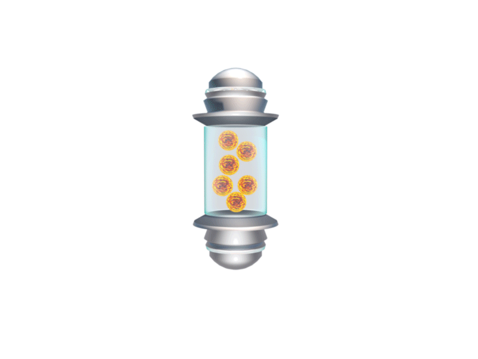
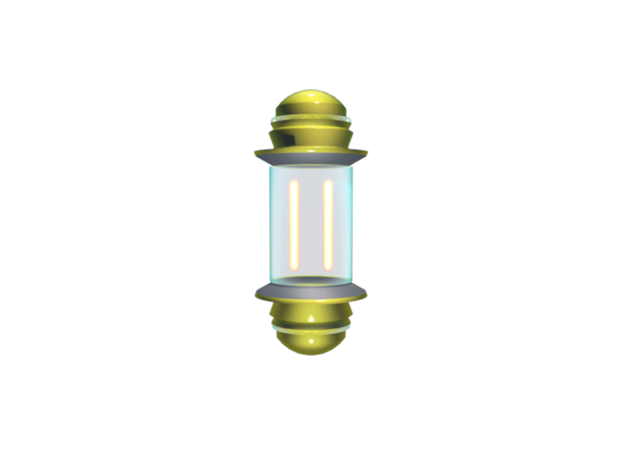

Les ressources qui peuvent changer le cours d'une mission
Au fil de votre progression, le système de défense identifiera différents bonus capables de modifier temporairement ou durablement vos capacités opérationnelles.
Ces ressources sont dispersées dans les différents secteurs de combat et apparaissent parfois au moment où le système en a le plus besoin. Leur récupération peut permettre de reprendre l'avantage, de modifier votre puissance de feu ou encore d'adapter votre plateforme à une situation devenue particulièrement dangereuse.
Mais aucune amélioration ne doit être considérée comme une solution automatique. Dans ASTÉROÏD destroyer, chaque ressource peut modifier votre manière de jouer et vous obliger à revoir votre stratégie en quelques secondes.

Des améliorations sur le terrain
Les bonus peuvent apparaître directement au cours d'une mission. Leur récupération devient alors une opportunité stratégique qu'il faut savoir saisir au bon moment.
Une plateforme en difficulté pourra ainsi recevoir une amélioration temporaire, augmenter sa capacité d'action ou modifier certaines de ses caractéristiques.
Le joueur doit donc rester attentif à son environnement et surveiller les éléments susceptibles d'apparaître au cours du combat. Une ressource ignorée aujourd'hui peut devenir une occasion manquée quelques secondes plus tard.
Une puissance supplémentaire, mais jamais gratuite
Les bonus ont été conçus pour apporter davantage de variété aux affrontements et permettre au joueur d'adapter son équipement aux événements rencontrés.
Agrandissement de plateforme, amélioration des capacités d'interception, multiplication des Orbesonic ou encore modification temporaire du comportement du système : les possibilités peuvent évoluer au fur et à mesure de la progression.
Certains effets peuvent transformer complètement la dynamique d'un affrontement. Une situation qui semblait impossible à contrôler peut soudainement devenir exploitable grâce à une amélioration bien utilisée.
Quand l'avantage devient un choix tactique
Les bonus ne sont pas uniquement destinés à augmenter la puissance du joueur. Certains peuvent modifier la manière dont une situation doit être abordée.
Une amélioration récupérée au mauvais moment peut être moins efficace qu'une ressource conservée pour une phase plus difficile. À l'inverse, attendre trop longtemps peut parfois signifier laisser passer une occasion décisive.
C'est cette logique qui transforme les bonus en véritables éléments de gameplay : le joueur ne doit pas seulement récupérer une ressource, il doit décider comment et quand l'exploiter.

Certains bonus peuvent être à double tranchant
Les données récupérées par le réseau PEMP indiquent que certaines améliorations peuvent également provoquer des modifications inattendues dans le comportement du système.
Une augmentation de puissance peut modifier l'équilibre d'une situation. Une plateforme plus grande peut offrir davantage de possibilités, mais également modifier votre manière de vous déplacer ou d'interagir avec les obstacles.
Le bonus devient alors un élément à intégrer dans votre stratégie plutôt qu'une simple récompense.
Chaque amélioration peut changer la mission.
Tout au long de votre parcours, les bonus constitueront une ressource essentielle pour faire évoluer votre système de défense.
Apprenez à identifier les opportunités, analysez votre environnement et choisissez le moment idéal pour exploiter vos ressources.